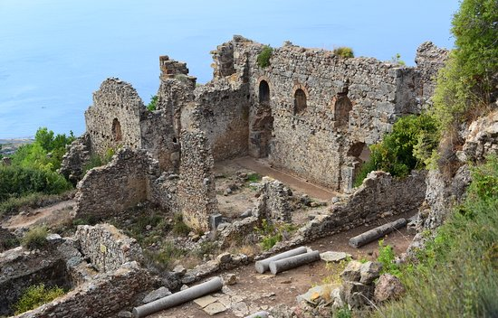
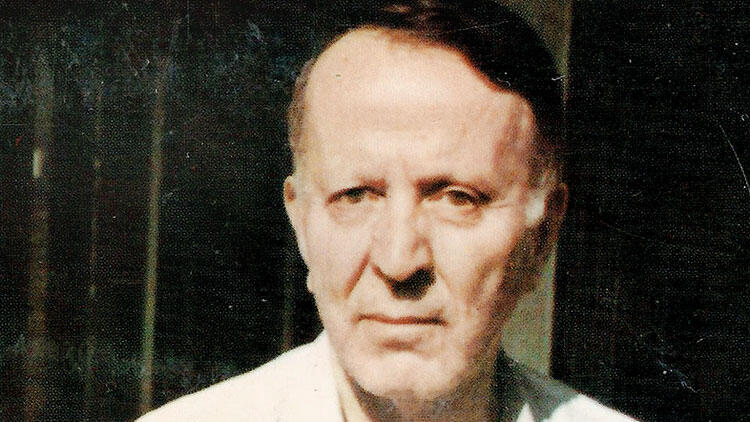
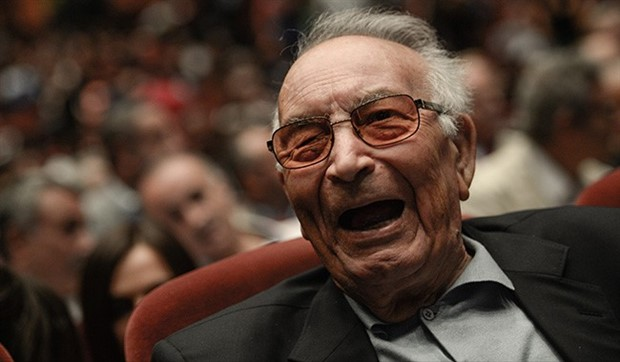

Yaşamak güzel, çünkü yaşamak başlamaktır.
‘Lizbon’a Gece Treni’yle tanınan İsviçreli felsefeci
yazar Pascal Mercier’in 10 yıllık aranın ardından yazdığı yeni romanı ‘Sözlerin
Ağırlığı’, hikâyesinden ziyade dil ve anlam, her durum için doğru kelimeyi bulmak,
edebiyat, hafızanın işleyişi, arkadaşlık ve aşk üzerine felsefi yorumlarıyla dikkat
çeken bir anlatı...

Syedra Antik Kenti ziyaretçilerini tarihi yolculuğa çıkarıyor
Hellenistik, Roma, Bizans ve Anadolu Selçuklu'dan eserlerin yer aldığı
Syedra Antik Kenti, ziyaretçilerini kendisine hayran bırakıyor,

Maltepe’de bir parka ‘Nihal Atsız’ adı verildi.
Turancı çevreler tarafından Türk milliyetçisi, aynı zamanda güçlü bir
Türkolog olarak kabul edilen, karşı görüştekilerin ise ırkçılıkla suçladığı Nihal Atsız’ın adı,
İstanbul Büyükşehir Belediyesi Meclisi’nin kararıyla Maltepe’de bir parka verildi.

Yaşar Kemal aramızdan ayrılalı 5 yıl oldu
Türk Edebiyat'ının usta isimlerinden Yaşar Kemal, solunum güçlüğü ve kalp ritm bozukluğu sebebiyle 2015'in Ocak ayında hastaneye kaldırılmış ve 28 Şubat günü hayatını kaybetmişti.
İşte bugün aramızdan ayrılalı 5 yıl olan usta yazar.